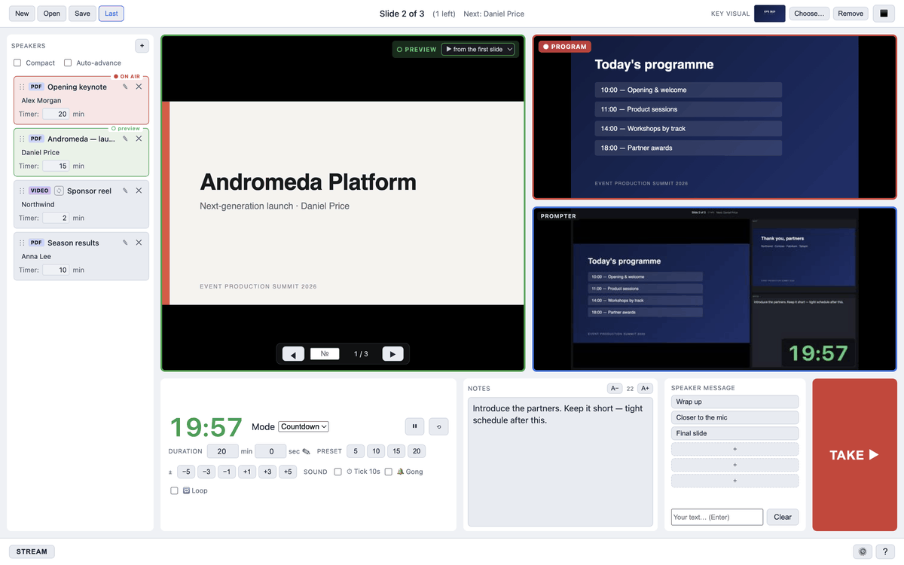
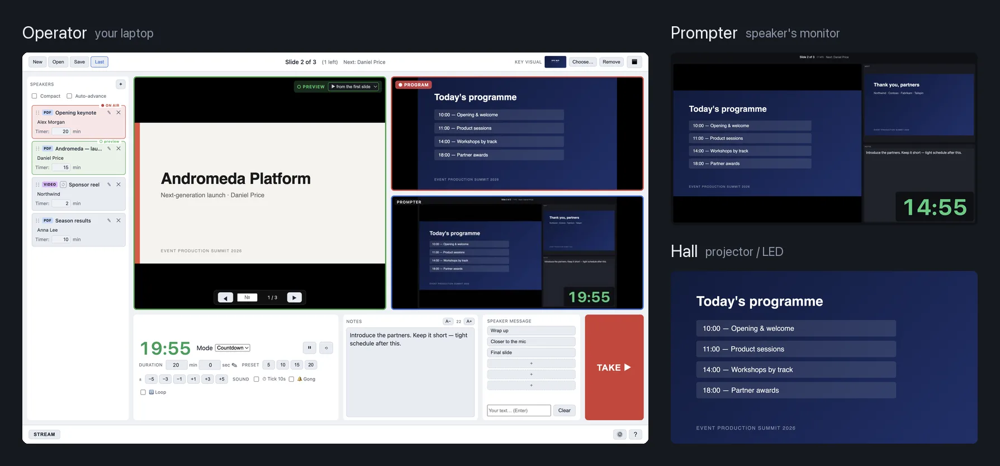
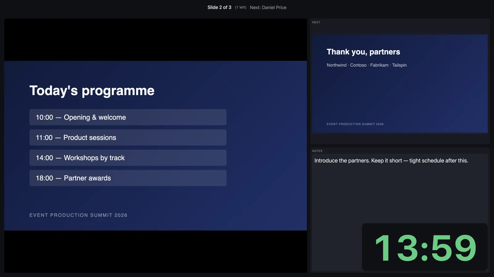
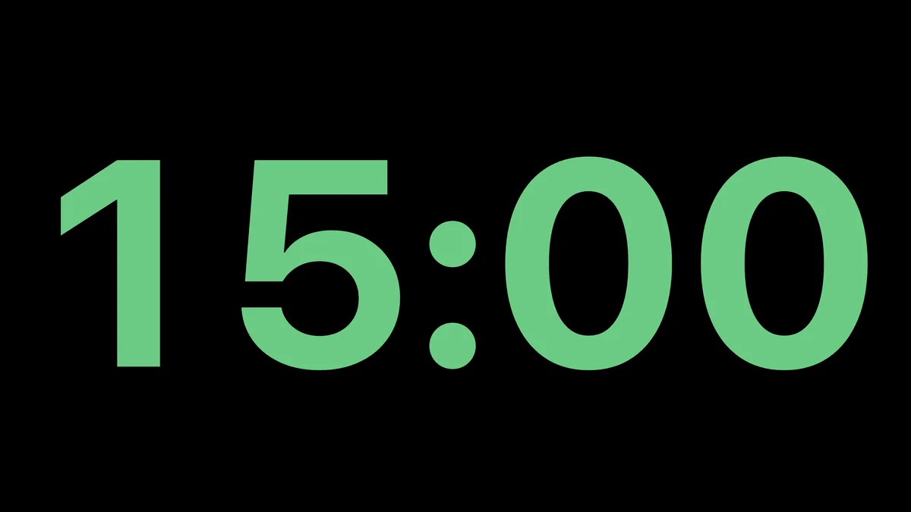
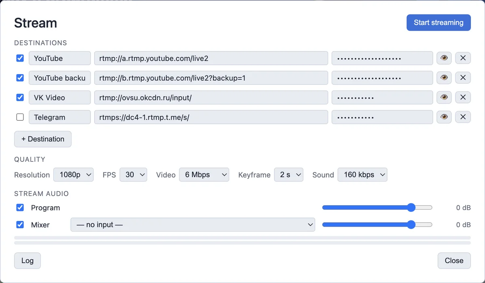
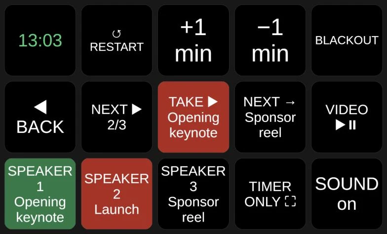
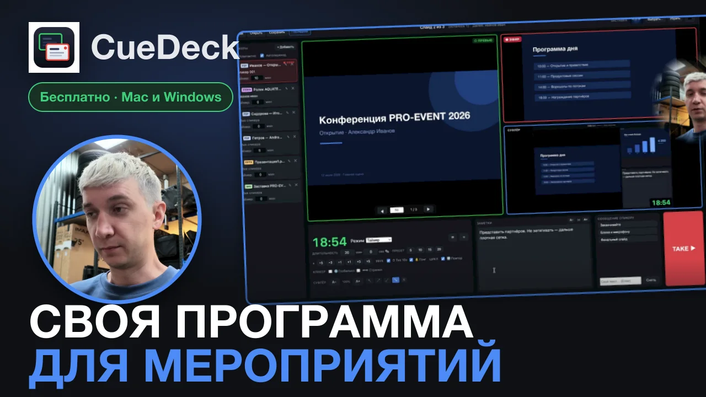

Оператор
Твой ноутбук. Плейлист спикеров, превью и эфир рядом, таймер, заметки и кнопка TAKE. Видно и что сейчас в зале, и что пойдёт дальше.
Бесплатно · Mac и Windows
Я сделал её для себя: на конференции у каждого спикера свой файл, а показывать их надо с одного места. Следующего готовишь в превью, жмёшь TAKE, и он уходит в зал.

Интерфейс на скриншотах английский. Русский выбирается при первом запуске.
Обычная смотрелка показывает одно и то же и тебе, и залу. Здесь у каждого экрана своя картинка, потому что нужна им разная.

Твой ноутбук. Плейлист спикеров, превью и эфир рядом, таймер, заметки и кнопка TAKE. Видно и что сейчас в зале, и что пойдёт дальше.
Монитор спикера: его слайд, следующий, твои заметки, таймер и сообщения от оператора. Оборачиваться на экран зала не нужно.
Проектор или LED. Только слайд во весь экран, без курсора, панелей и рабочего стола.
Текущий и следующий слайд, твои заметки в реальном времени. Таймер желтеет и краснеет к концу. Или весь экран отдаётся таймеру, под отдельный монитор у сцены. Таймер и сообщение спикеру ставятся мышкой куда угодно.


Кнопка STREAM отправляет картинку и звук зала на YouTube, VK и Telegram, до пяти площадок разом. Площадку можно включить или отключить прямо в эфире. Статистика показывает, где проблема: в компьютере, в сети или на площадке.

Таймер на прозрачном фоне, зал со звуком и суфлёр уходят в сеть источниками OMT, это открытая замена NDI. vMix 29 и новее видит их сам, для OBS нужен плагин OMT. Таймер ложится поверх картинки без ключа.
Ролики лучше гнать по проводу: по Wi-Fi у нас доходило 11 кадров из 30. Живой vMix 29 мы пока не проверяли, проверяли OBS.
Есть готовая страница для Bitfocus Companion: живой таймер, TAKE с именем спикера, спикеры подсвечены зелёным в превью и красным в эфире. Для всего остального есть HTTP и OSC.

Всё это появилось на живых прогонах, а не ради длинного списка.
Все выступления в одной очереди. Файл кидается перетаскиванием, порядок меняется мышкой. Флешка за две минуты до выхода просто ещё одна строка.
PDF, PowerPoint, Keynote, картинки, видео. Лежат в одной очереди и открываются одинаково. PowerPoint и Keynote идут через LibreOffice, эффекты исчезновения и переходы пока не играют.
Ролик, вшитый в слайд PowerPoint, играет на своём месте. Анимации «по клику» разворачиваются в шаги, и кликер листает их как в оригинале.
Обратный отсчёт, секундомер или часы. Пресеты и ±1 минута на лету, тиканье и гонг. Зал таймер не видит.
Заметки идут в суфлёр сразу, а заметки докладчика из PowerPoint подставляются сами. Сообщение спикеру: «Заканчивайте», «Ближе к микрофону» или свой текст.
Ноутбук гостя через USB-капчер HDMI встаёт в плейлист как обычный файл.
Отдельный выход в наушники: послушать принесённый ролик до того, как он уйдёт в зал. Индикаторы уровня по эфиру и превью.
Кнопка B включает картинку или видео-заставку в зале, пока меняешь файлы. Вместо чёрного экрана и рабочего стола.
Настройки под знакомый зал сохраняются профилем. Проект переезжает на другой компьютер, а пропавшие файлы видны при открытии, не в эфире.
Сорок минут про окна и настройки. Он записан на версии 0.4.1, с тех пор добавилось многое, но основа та же.

Откроется на YouTube. Ссылка на ролик
Отдельные сборки для Apple Silicon и Intel. Приложение без подписи, поэтому при первом запуске: правая кнопка, «Открыть», ещё раз «Открыть». Если пишет «приложение повреждено», в терминале xattr -cr /Applications/CueDeck.app.
64-битная Windows 10 или 11. Архив распаковывается в любую папку, установка не нужна. SmartScreen предупредит: «Подробнее», потом «Выполнить в любом случае». Не запускается? Windows по шагам.
Нужен LibreOffice: через него конвертируются PPTX, PPT, ODP и KEY. PDF, картинки и видео работают без него.